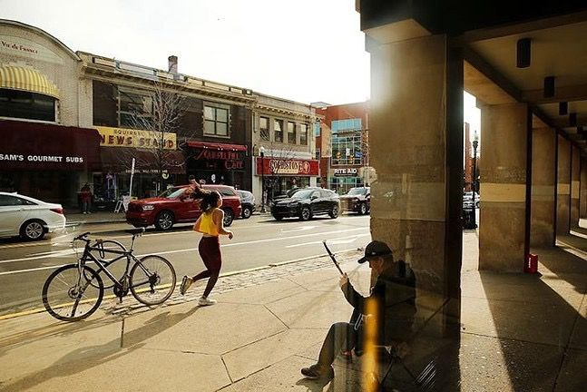

Essen in Pittsburgh
Pittsburgh hat viele Restaurants. Ich gehe nicht oft in Cafés, aber ich esse gerne verschiedene Arten von Essen. Ich mag mexikanisches, türkisches und italienisches Essen. Ich esse auch gerne deutsches Essen. Ich esse Kartoffeln mit Wurst, Brezel und Schnitzel mit Gemüse. Aber ich kann kein Essen mit Erdbeeren essen, weil ich allergisch bin. Im Allgemeinen bin ich ein Allesfresser. Ich kann Fleisch, Fisch, Gemüse und viele Früchte essen. Ich gehe nicht oft in Restaurants, weil ich normalerweise zu Hause koche. Abends esse ich gerne zu Hause und trinke Kamillentee. Meine Freunde essen kein mexikanisches Essen in Pittsburgh. Sie sagen, dass das mexikanische Essen hier schlecht ist. Meine Freunde lieben polnisches und chinesisches Essen. Sie gehen oft ins Café in Squirel Hill. Mein Freund mag chinesisches Essen hier. Chinesisches Essen ist das beste in der Stadt. Ich möchte chinesische Nudeln und scharfe Suppe probieren.
